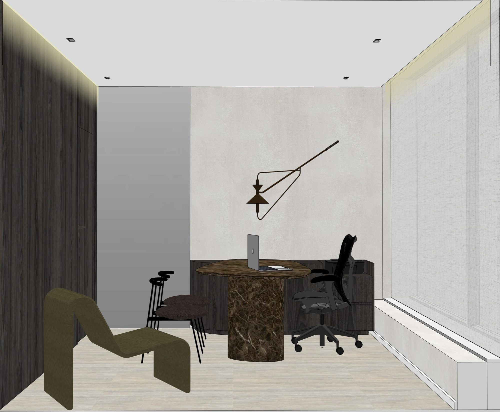
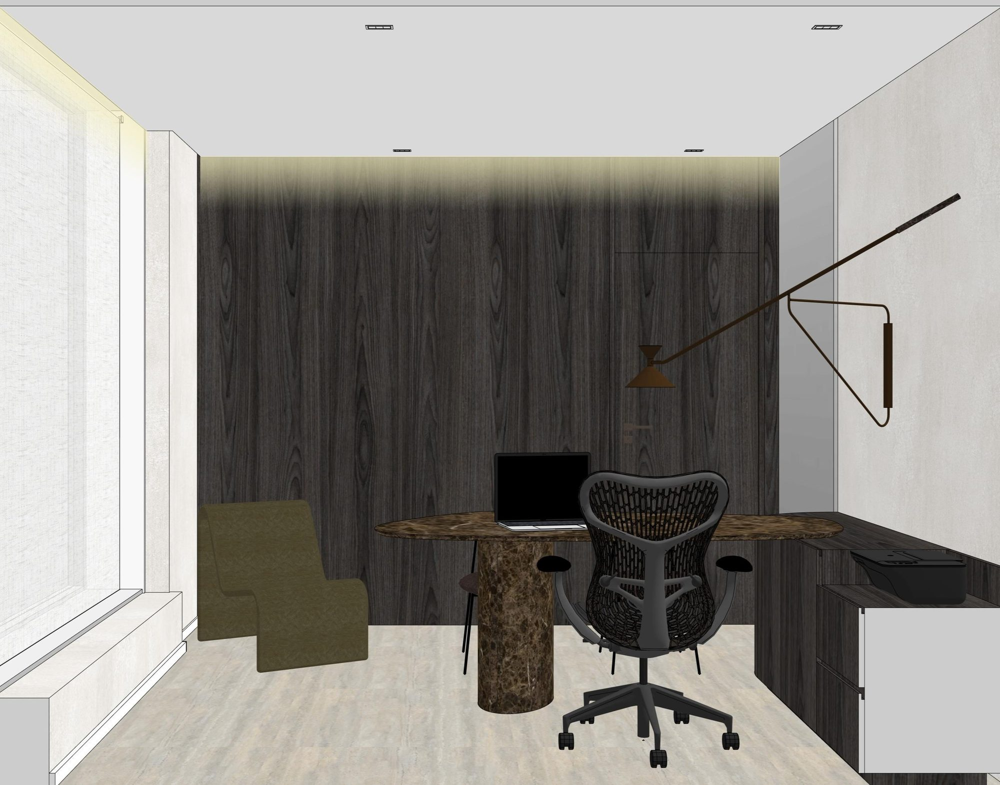
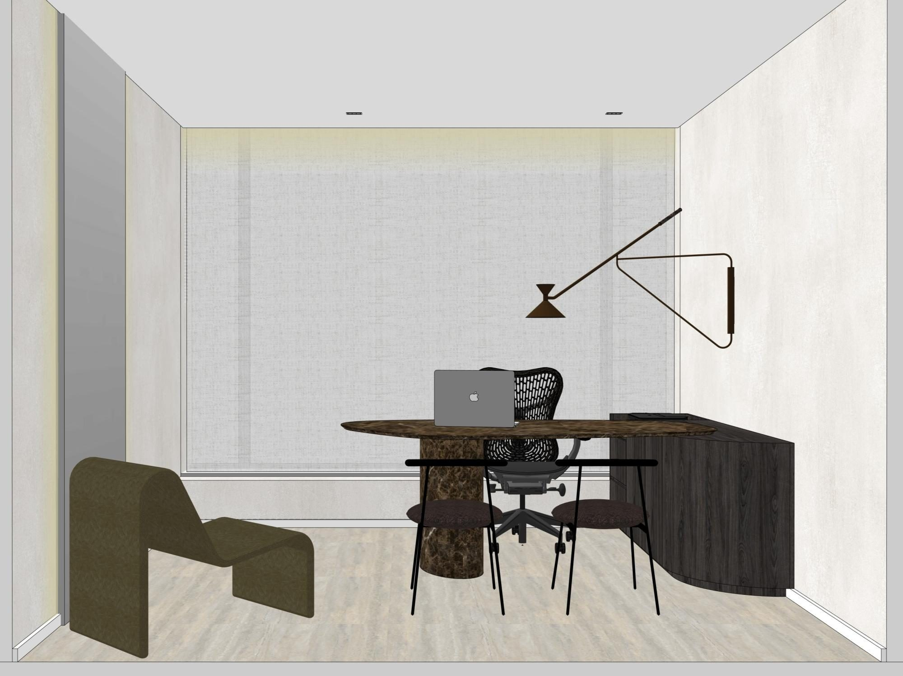
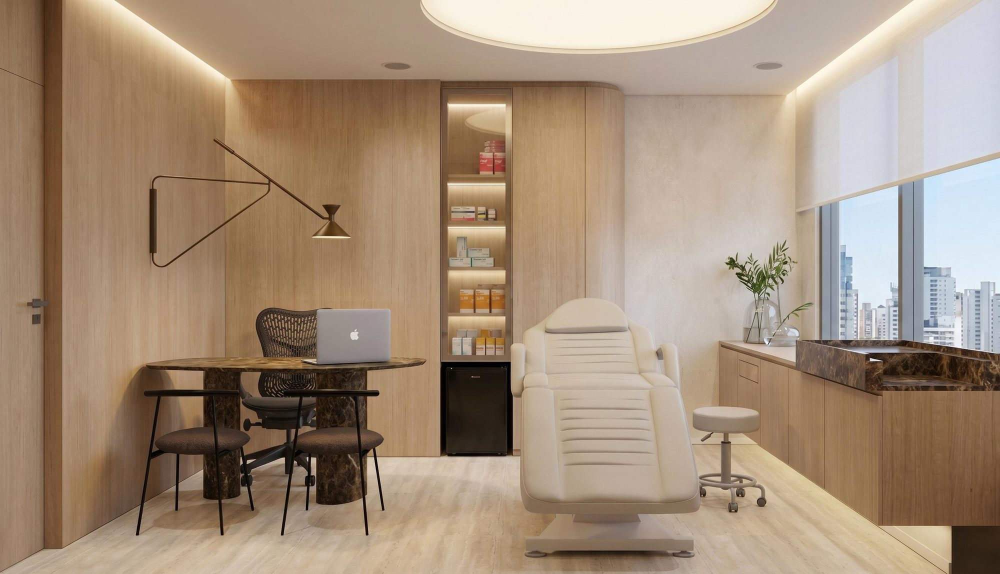

Quem eu sou · 60 s [PENDENTE]Dr. Túlio Bovo
Metabolismo, avaliação hormonal, emagrecimento e lipedema.
CRM-SP 000000 [PENDENTE] Ver páginaKit do sistema · Instituto Rocca
Instituto de Qualidade de Vida e Bem-Estar em Moema. A gente trata a causa do que parou de funcionar em você — com o mesmo médico do primeiro dia em diante.
Atendimento em Moema, São Paulo
01 — Paleta
Paleta oficial do manual (Rocca 01–04) mais as cores de apoio. Superfícies: .sup-bordo .sup-osso .sup-profundo. Nem preto puro nem branco puro.
02 — Tipografia
Semplicita Pro, a tipografia oficial, auto-hospedada em brand/fontes/ (300, 400, 500, 600 e itálicas). Um único token --fonte troca tudo.
h1.titulo-2l
Seu médico. Sua melhor versão.
h2.titulo-2l
Alguma coisa parou de funcionar. E ninguém foi olhar.
h3
Investigar antes de prescrever.
.eyebrow .numeral
02 — O problema
p .destaque
A consulta começa pela escuta, passa pelo exame e só então chega à conduta. Nessa ordem, sempre.
Você sai entendendo o próprio resultado, sem jargão, e sabendo por que cada coisa foi pedida — com o médico que vai te acompanhar o tratamento inteiro.
.texto-grande · secundário .texto-2
Na maior parte das vezes não é a idade. É metabólico, é hormonal, e é investigável.
Dormir oito horas e acordar cansado. A disposição que sumiu. A barriga que não sai, mesmo fazendo o que sempre funcionou para você.
.assinatura
Eu vejo isso toda semana.
— Dr. Túlio Bovo03 — Botões
.botao.botao--primario muda com a superfície; .botao--secundario é texto com linha que cresce e seta.
04 — Tiles
.tiles .tile .tile__media .tile__rotulo .tile__sub
05 — Galeria editorial
.galeria com padrão assimétrico a cada 4 itens; .galeria__item--vertical 4:5; .legenda.



06 — Os médicos
Aqui você não passa por um médico. Você tem um médico — o mesmo, do primeiro dia em diante. .medicos .medico .medico__video 9:16

Quem eu sou · 60 s [PENDENTE]Metabolismo, avaliação hormonal, emagrecimento e lipedema.
CRM-SP 000000 [PENDENTE] Ver página
Quem eu sou · 60 s [PENDENTE]Metabolismo, avaliação hormonal, emagrecimento e lipedema.
CRM-SP 000000 [PENDENTE] Ver página
Quem eu sou · 60 s [PENDENTE]Dermatologia. A autoridade dela é o que ela não indica.
CRM-SP 000000 [PENDENTE] Ver página07 — Lista numerada
ol.pilares com numeral em madeira via contador CSS.
Todo paciente sai da primeira consulta com o WhatsApp pessoal de quem o atendeu.
É o que responde ao medo de voltar tudo depois. Perder gordura sem investigar o metabolismo é o que não funcionou até aqui.
Uma tela off-white, uma linha só, contando a evolução. Sem painel, sem tabela cheia.
08 — Passos
Quem entende o que vai acontecer na consulta, aparece. ol.passos com numerais 01–04 e linha conectora.
Pelo WhatsApp. Quem responde marca a avaliação e explica o que vai acontecer.
Começa pela escuta. O médico quer saber o que parou de funcionar antes de pedir qualquer coisa.
Sem jargão. Você entende cada linha e sabe por que cada item foi pedido.
E você sai com o WhatsApp do seu médico — o mesmo, do primeiro dia em diante.
09 — Declaração com respiro
Foi o seu metabolismo. Quando ele desregula, energia, sono, disposição e peso vão junto.
10 — FAQ
details.faq com sinal + / − em CSS e abertura suave. As respostas abaixo são exemplos de tom; as oficiais vêm da Direção.
Não. O tratamento tem começo, meio e alta. O que continua depois é o acompanhamento — o mesmo médico, no intervalo que o seu metabolismo pedir.
— Dr. Túlio BovoAcademia ajuda, mas não investiga. Quando o metabolismo desregula, treinar mais não explica por que a energia sumiu. A gente avalia antes, e só então propõe o que fazer.
— Dr. Breno GondimNão, e é por isso que a primeira conversa é sobre o que eu não indico. Pele boa começa antes do procedimento: com avaliação, com critério e com pouca intervenção.
— Dra. Ana Paula Bovo11 — Motion e estados
[data-reveal] [data-reveal-grupo] [data-split-linhas] [data-parallax] [data-contador] [data-abre-lightbox]

Reveal padrão
Opacity 0 → 1, y 24 → 0, 1,1 s, power3.out, stagger 0,08 em grupos. Títulos revelam por linha, sem plugin pago.
Contador
0 min
A consulta que passa de uma hora — um número que a casa sustenta, não uma promessa.
Lightbox
Dialog nativo com backdrop bordô-profundo 90%; dá play no vídeo interno ao abrir e pausa ao fechar.
Sem WebGL, sem CDN
three, gsap e lenis vêm de node_modules e são empacotados em app.js. Em prefers-reduced-motion tudo aparece sem animação.
12 — Formulário
Campos só com linha inferior, rótulo flutuante, botão e estado .form--enviado.